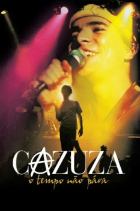

Cazuza: O Tempo Não Pára (2004)


Avaliação (TMDb):


7.1/10 (173 votos)
Avaliação (Usuário):
País:Brazil, 98 minutos
Idiomas falados:Português
Gênero(s):Drama, Música
Diretor(s):Walter Carvalho, Sandra Werneck
Codec:MPEG-2 (DVD)
Número: 903
Sinopse:
O filme retrata a vida do compositor e cantor Cazuza desde quando começou a carreira, atuando na peça Pára-quedas do Coração, no Circo Voador, o sucesso com o Barão Vermelho e sua carreira solo até sua morte em 1990, em decorrência de complicações causadas pela AIDS.
Elenco:
Daniel de Oliveira, Marieta Severo, Reginaldo Faria, Andréa Beltrão, Leandra Leal, Dudu Azevedo, Emílio de Mello, Maria Flor, Débora Falabella, Cadu Fávero
Tipo de mídia: DVD5,
Legendas: Inglês, Espanhol, Português
Alugado: Não
Tela: 4:3